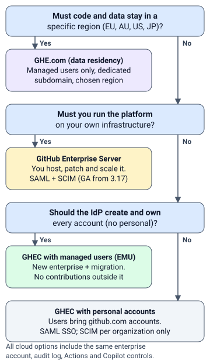
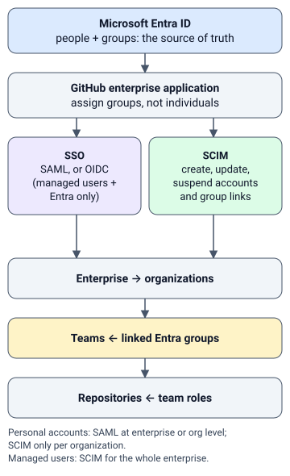
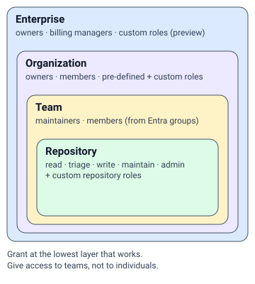
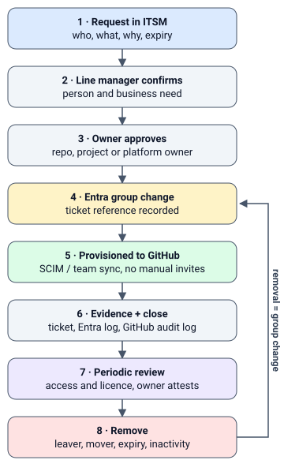

1Choose the platform and account type
The biggest decision, and the hardest to reverse. Answer it first because identity, external access and migration effort all follow from it.
GHEC, personal accounts
Users sign in with their own github.com account. You add SAML SSO at the enterprise or organization level. SCIM is available only per organization. You can't control usernames.
Best when people must also work in open source with one account.
GHEC, managed users (EMU)
Your IdP creates every account (handle_shortcode) and suspends it on removal. SAML, or OIDC with Conditional Access when the IdP is Entra ID. Managed users can't contribute outside the enterprise.
Only for a new enterprise, so moving means migration.
GHE.com (data residency)
A managed-users enterprise on its own GHE.com subdomain, with data stored in the EU, Australia, US or Japan.
Choose it when data location is a hard requirement.
GitHub Enterprise Server
You run it on your own infrastructure: upgrades, backups, HA and runners. SAML with SCIM is generally available from 3.17. Managed users don't exist on Server, and cloud services such as Copilot stay in the cloud.
Choose it when it must be self-hosted.


Do we have a written requirement for data residency or self-hosting? Docs
Leads to: Shortlist GHE.com for data residency, or GitHub Enterprise Server for self-hosting. Ask the requirement's owner to confirm it before you commit.
On track. Stay on github.com, then use the next questions to choose between personal accounts and managed users.
Do people need to contribute to public open source with their work account? Docs
Leads to: That favours personal accounts. Managed users can't contribute outside the enterprise and only have read access to public GitHub. If only a few people need it, they can keep a separate personal account instead.
On track. Managed users stay an option, giving you full control over accounts and usernames.
Does every user, including external users, have an identity in our IdP? Docs
On track. Managed users and SCIM are both possible, because every account can be created and removed from the IdP.
Recommendation: Fix this first. Give external users a guest or member account in Entra ID. Without one, you can't apply SSO, review their access or remove them automatically.
Have we sized the effort of moving to managed users: repositories, runners, integrations and tokens? Docs
On track. Remember what the importer doesn't carry over: Actions secrets and runners, apps, packages, team access and audit logs.
Recommendation: Size it before deciding. Managed users need a new enterprise, and the importer doesn't carry over Actions secrets and runners, apps, packages, team access or audit logs.
Are all our organizations inside one enterprise account? Docs
On track. You have one place to apply policies, SSO and billing.
Recommendation: List every organization first. Ones outside the enterprise skip its policies, SSO and billing. Invite them in, or plan to migrate them.
Watch out: you can't switch an existing enterprise to managed users. It means creating a new enterprise and migrating into it, so plan it as a project.
2Identity: sign-in and provisioning
Two separate controls. SSO decides who can sign in. SCIM decides who exists and in which groups. Without SCIM, removing someone in the IdP does not remove them from GitHub.


Is the GitHub app in Entra assigned to groups rather than individual users? Docs
On track.
Recommendation: Assign groups. Access then follows group membership and reviews happen in one place. Group-based assignment needs Entra ID P1 or above.
Do we have the Entra licences we need: P1 for groups and provisioning, and ID Governance for access reviews? Docs
On track.
Recommendation: Check before designing around them. Without P1 there's no group-based assignment or app provisioning. Access reviews need ID Governance or Entra Suite; only some of their capabilities work with P2.
Is SCIM planned, so that removing someone in the IdP removes them from GitHub? Docs
On track. From then on, invite and remove people only through the IdP. Manual invites leave accounts unlinked and aren't removed automatically.
Recommendation: Plan it. Without SCIM, removing someone in the IdP doesn't remove them from GitHub, and tokens they authorised keep working. With personal accounts, SCIM is per organization and needs an OAuth app authorised by a dedicated owner account, which uses a licence.
Personal accounts: have we decided whether SAML sits on the enterprise or on each organization? Docs
On track. Remember that enterprise SAML overrides organization SAML, and organization SAML doesn't protect internal repositories.
Recommendation: Decide it early. Enterprise SAML covers every organization and overrides organization settings. Organization SAML doesn't protect internal repositories. Confirm with GitHub how SCIM fits your choice.
Managed users with Entra: are we using OIDC so Conditional Access applies? Docs
On track. Note that one Entra tenant supports only one OIDC enterprise.
Recommendation: Consider OIDC. It's available only with Entra ID and lets GitHub apply your Conditional Access IP conditions.
Are the SSO recovery codes stored safely, with a break-glass owner path? Docs
On track.
Recommendation: Download and store them now. They let an owner get in when the IdP is down or misconfigured.
Are GitHub teams linked to Entra groups, so membership follows the IdP? Docs
On track.
Recommendation: Link them: team sync with personal accounts, SCIM groups with managed users. Team sync doesn't create accounts, and Entra doesn't provision nested groups, so keep groups flat.
Watch out: with SCIM in place, invite and remove people only from the IdP. Manual invites leave accounts unlinked and break automatic removal. Organization-level SCIM also depends on an OAuth app authorised by a dedicated owner account, which uses a licence.
3Roles and authorization
A role catalogue is a short table: role, layer, what it allows, who approves it and how often it's reviewed.


Do we have at least two named enterprise owners, with the role kept to platform admins? Docs
On track.
Recommendation: Name two, so losing one person doesn't lock you out, and keep everyone else out. Owners control every setting and organization.
Is the organization base permission set to none or read? Docs
On track. Grant anything more through teams.
Recommendation: Lower it. Base permission applies to every member in every repository. Grant more through teams.
Does each role in the catalogue map to one Entra group and one GitHub team or role? Docs
On track.
Recommendation: Map them one to one. Requests then name a role, and reviews and removal happen per group.
Have we defined who is owner, maintainer, contributor and reader on a repository? Docs
On track.
Recommendation: Start from the five built-in roles: read, triage, write, maintain and admin.
Do the built-in roles cover our needs? Docs
On track. Fewer roles are easier to review.
Leads to: Use custom repository or organization roles. Enterprise custom roles are still in preview, so don't depend on them yet.
4External users
Partners and contractors are usually the riskiest group: they're hard to identify, hard to review and easy to forget.
Does every external user have an IdP identity, a named sponsor and an expiry date? Docs
On track.
Recommendation: Add all three. Entra access packages can set approvals and an expiry date for guests.
Personal accounts: do our licence numbers include outside collaborators? Docs
On track.
Recommendation: Count them. Outside collaborators on private or internal repositories each use a licence.
Managed users: do vendors get the guest collaborator role? Docs
On track. Guests see internal repositories only in organizations where they're members.
Recommendation: Use it. A regular managed user in any organization can see every internal repository in the enterprise. A guest sees them only in organizations where they're a member.
Does access end automatically when an external user's expiry date passes? Docs
On track.
Recommendation: Automate it. Let the Entra assignment expire, let provisioning remove access, and treat renewal as a new request.
Have we decided whether partner work lives in its own organization or in teams? Docs
On track.
Recommendation: Decide it. A separate organization isolates partner access and settings. Teams are simpler when partners work alongside your own staff.
5On- and offboarding


Does a joiner's request name a role from the catalogue, not a list of repositories?
On track.
Recommendation: Request roles instead. A list of repositories can't be reviewed or removed consistently.
When someone changes role, does their old access drop automatically?
On track.
Recommendation: Swap groups instead of adding to them. Old access then goes with the old group.
When someone leaves, does disabling their IdP account remove their GitHub access? Docs
On track.
Recommendation: Only SCIM does that. Without it, leavers keep organization membership and authorised tokens until someone removes them by hand.
Do automations and pipelines run on GitHub Apps rather than a person's token? Docs
On track.
Recommendation: Move them to GitHub Apps. A pipeline on a personal token breaks when that person leaves and carries all of their access.
Is there an agreed rule for dormant users? Docs
On track.
Recommendation: Agree one, for example a quarterly review. Dormant members still use a licence.
6Audit and compliance
An auditor wants three records that line up: the ticket (why, who approved), the IdP log (group change) and the GitHub audit log (what happened).
Is the native audit log's retention enough for us: 180 days of web events, 7 days of Git events? Docs
On track.
Recommendation: Stream the audit log to storage or your SIEM to keep it longer.
Is audit log streaming switched on? Docs
On track.
Recommendation: Turn it on early, for example to Azure Event Hubs or Blob Storage. It only captures events from the day it's enabled.
Do we keep Entra audit logs for longer than Entra's default? Docs
On track.
Recommendation: Export them. Entra keeps audit and sign-in logs for 7 days on Free and 30 days on P1 or P2, so the group changes behind GitHub access disappear quickly.
Are access reviews run on the Entra groups behind GitHub teams? Docs
On track.
Recommendation: Set them up with group or repository owners as reviewers. Access reviews need ID Governance or Entra Suite.
Can we match a ticket to its Entra group change and the GitHub audit event?
On track.
Recommendation: Record the ticket number with each group change so all three records can be joined.
7Licensing and rollout at scale
Do we know who is using a licence today? Docs
On track.
Recommendation: Download the licence usage report. Members, outside collaborators on private or internal repositories and dormant members all count. Pending invitations count too, unless you're on usage-based billing or managed users.
Are Visual Studio subscribers invited at their Entra UPN? Docs
On track.
Recommendation: Invite them at their UPN. The bundled licence is used only when a verified email on their GitHub account matches it; otherwise they use a separate licence.
Can we add a user without removing someone else? Docs
On track.
Recommendation: Consider usage-based licences: pay monthly for the seats in use instead of a fixed count, payable through Azure. Anyone who held a seat during the month is billed for that month.
Has the licence report been reconciled against the IdP? Docs
On track.
Recommendation: Do it before any migration. Every GitHub user should match an IdP identity; anyone who doesn't needs an owner or removal.
Watch out: a fixed seat cap pushes teams to remove someone to make room. Usage-based licensing plus reviews removes that pressure without losing control.
8Cost: what else gets billed
The seat is only part of the bill. Everything below has its own meter and needs an owner and a budget.
| Product | How it's billed |
|---|---|
| GitHub Enterprise | Per licence: volume, Visual Studio bundle or usage-based. |
| Copilot Business / Enterprise | $19 / $39 per user per month, including 1,900 / 3,900 pooled AI credits. Extra usage is metered. |
| Copilot access new | From 28 Oct 2026 through account teams: $0 seat for users with a GitHub Enterprise Cloud licence, $10 Standalone for others. All usage metered. It applies enterprise-wide and can't be mixed with Business or Enterprise. |
| Actions | Enterprise Cloud includes $300 of compute usage a month, now shown as money rather than minutes. Self-hosted runners are free. |
| Secret Protection / Code Security | Two Advanced Security products, billed per unique active committer over 90 days. |
| Codespaces, Packages, Git LFS | Metered usage. |
Is there one named owner for the GitHub bill and its payment method or Azure subscription? Docs
On track.
Recommendation: Name one. Metered products such as Copilot usage and Actions can be billed through a connected Azure subscription.
Are cost centers and budgets in place before metered products are turned on? Docs
On track.
Recommendation: Create them per business unit first. Cost centers cover metered usage only, not volume seats, and each can bill its own Azure subscription.
Have we chosen a Copilot plan and set the AI credit spending policy? Docs
On track.
Recommendation: Decide before rollout. Plans differ in price and included AI credits, and extra usage is metered.
9ITSM and fulfilment
Keep the ITSM tool as the system of record. Let the IdP do the granting. Avoid a person clicking in GitHub.
Does the request form capture role, business reason, sponsor (for external users) and expiry?
On track.
Recommendation: Add those fields. Approvers, reviewers and auditors all need them later.
Do approvals go to the line manager first, then the accountable owner? Docs
On track.
Recommendation: Use two stages: the manager confirms the person and the need, the owner confirms the access. Entra access packages support multi-stage approval.
Does fulfilment change an Entra group, rather than someone inviting people in GitHub? Docs
On track.
Recommendation: Change the group instead. Direct invites bypass the IdP, leave accounts unlinked and aren't removed automatically.
Does a ticket close only after provisioning is confirmed, with evidence attached?
On track.
Recommendation: Close on evidence: the group change and the GitHub audit event. That's what turns the ticket into an audit record.
Do removal requests follow the same path?
On track.
Recommendation: Run removals through the same flow in reverse, so they're approved and evidenced too.
10Pilot and phased rollout
- Prerequisites owner named, platform decision made, IdP groups and catalogue drafted, streaming on, recovery codes stored.
- Pilot one organization, two or three teams, internal users and at least one external user. Run the full request-to-removal flow end to end.
- Expand one organization or business unit at a time. Reconcile licences after each wave.
- Run quarterly access and licence reviews, monthly cost check, yearly catalogue review.
Is rollback defined for each phase? Docs
On track.
Recommendation: Define it, for example how to turn off SCIM or revert app assignments without locking owners out. Keep the recovery codes at hand.
Are the pilot's success criteria agreed up front?
On track.
Recommendation: Agree them, for example time to grant, time to remove and complete evidence.
Is every decision that stays with the organization listed with an owner and a date?
On track.
Recommendation: List them. Open decisions without an owner stall the rollout.